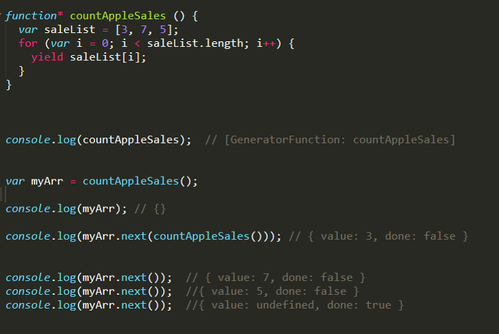
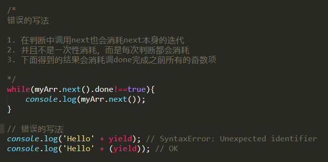
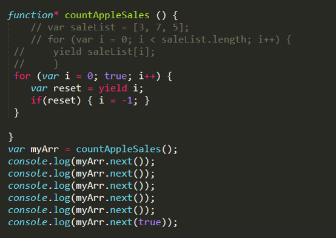
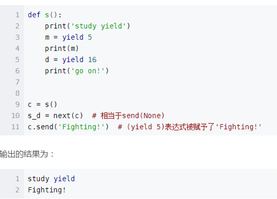
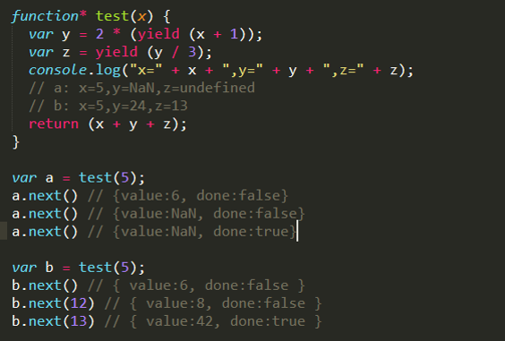

# yield是什么
- yield是ES6的新关键字，使生成器函数执行暂停，yield关键字后面的表达式的值返回给生成器的调用者。它可以被认为是一个基于生成器的版本的return关键字。
- yield关键字实际返回一个IteratorResult（迭代器）对象，它有两个属性，value和done，分别代表返回值和是否完成。
- yield无法单独工作，需要配合generator(生成器)的其他函数，如next，懒汉式操作，展现强大的主动控制特性。
# yield应用的简单例子

demo1
- 如果你看到某个函数中有yield，说明这个函数已经是个生成器了
- yield可以用来加强控制，懒汉式加载
- 调用函数指针和调用生成器是两码事，注意上面的运行结果，countAppleSales和myArr。
- 需要next()函数配合使用，每次调用返回两个值：分别是value和done，代表迭代结果和是否完成
- 函数next()是个迭代器对象，传参可以缺省，默认调用函数。
# 错误的调用

demo2
上述错误的调用中，会的到如下结果
{ value: 7, done: false }
{ value: undefined, done: true }
因为在while判断中的next也会进行消耗，导致输出结果与预期不符，得到的只是符合条件的偶数项
# 一些说明
- yield并不能直接生产值，而是产生一个等待输出的函数
- 除IE外，其他所有浏览器均可兼容（包括win10 的Edge）
- 某个函数包含了yield，意味着这个函数已经是一个Generator
- 如果yield在其他表达式中，需要用()单独括起来
- yield表达式本身没有返回值，或者说总是返回undefined(由next返回)
- next()可无限调用，但既定循环完成之后总是返回undeinded
# next()函数及参数
- 在js中，虽然借鉴了python的函数，但是也进行了自己的改造，由于没有send()函数，所以无法直接传递yield的值。
- next()可以带一个参数，该参数会被认为是上一个yield整体的返回值，稍后将在代码中展示。
- 在某种程度上，next()可以直接当做send()使用
它的意义在于，可以在不同阶段从外部直接向内部注入不同的值来调整函数的行为(这一点是其他循环很难做到的，或要付出较大的代价才可以做到)
# yield参数的对比

js

python
- 对js中generator函数进行改造，对比右边的python中的yield，它们原理一样，只是调用方式不同
- 调用next()，会产生许多i的值, 但是不会影响reset，因为yield直接将值return出来了。
- 当传值true后，yield及他的参数整体变为true赋值给reset，这是reset会被执行，从而满足循环内的判断条件
- 这里的使用 next(参数) 已经达到了send(参数)的效果
- 这并不会平白增加循环的时间复杂度，因为不传参的时候，并不会占用更多的内存
# 更深层次的理解yield
如果刚才没有让你有一个清晰的认识，那么这个例子一定会让你彻底明白的

传参
# 分析
next() 传参是对yield整体的传参，否则yield类似于return
# A组
- x恒为5，所以第一次调用传空没问题，可得到对应的第一个yield返回值:yield (x + 1)
- 第二次调用，无参数传入，所以y为NaN(2* undefined)，自然得不到z
- 第三次调用同上分析
# B组
- x恒为5，所以第一次调用传空没问题，可得到对应的第一个yield返回值:yield (x + 1)
- 第二次调用，传入12，所以y为24(yield (x + 1)=入参)，得到第二个yield: yield (y / 3)=8
- 第三次调用同上分析,得到最后的z值并return=42
# 目前项目中的可用性
在前端项目中，用的机会很少，完全可以忽略他的存在，但是在后台项目中，就显得比较重要了，因为其优越的可控性，可是极大的提升线程的效率。
目前只是根据官网，ES6规范，大站等总结出来的，但是很遗憾，目前我们的项目中由于node项目较简单，并不需要进行实际改造。
如果需要实例的话，可参考github上的一些python后端项目，调用方式稍有不同，由于js参考的python语言，他们又同为动态语言，所以原理都是相同的，用处也一样。
文章来源：https://www.jianshu.com/p/36c74e4ca9eb